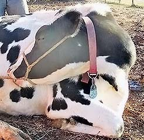
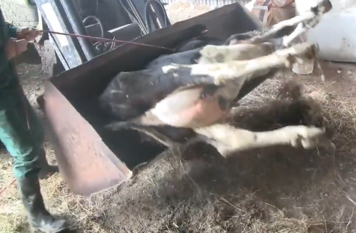
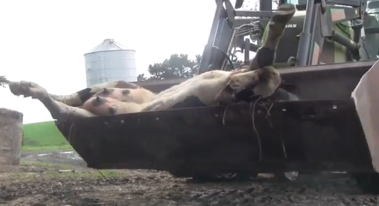

Moving a Down Cow with a Skid Steer or Loader Mover una Vaca Caída con un Skid Steer o Cargador
A down cow is a cow that cannot stand up or walk. This is an emergency.
You need to move her right away.
Una vaca caída es una vaca que no puede pararse o caminar.
Esto es una emergencia. Necesita moverla inmediatamente.
Why moving is urgent:
Por qué es urgente moverla:
Staying in one position causes muscle damage
Nerve damage can happen in just a few hours
The cow's weight presses on her body and hurts her
Quedarse en una posición causa daño a los músculos
El daño a los nervios puede pasar en solo unas horas
El peso de la vaca presiona su cuerpo y la lastima
You need 3 people:
Necesita 3 personas:
1 person to run the skid steer or loader
2 people to handle the cow and rope
1 persona para manejar el skid steer o cargador
2 personas para manejar la vaca y la soga
Before you start: Look at where the cow is lying. If she is on concrete or in
a bad spot, move her first. If you don't know why she is down, call the vet before treating
her.
Antes de empezar:Mire dónde está acostada la vaca. Si está en concreto o en un lugar malo,
muévala primero. Si no sabe por qué está caída, llame al veterinario antes de
tratarla.
Step 1: Put On the Halter Paso 1: Poner el Cabestro
What you need: A halter with a long rope
Lo que necesita:Un cabestro con una soga larga
Put the small end of the halter under her chin
Put the large end over her head and ears
Tie the halter rope to her back leg
You will use this rope to roll her into the bucket
Ponga el extremo pequeño del cabestro debajo de su barbilla
Ponga el extremo grande sobre su cabeza y orejas
Amarre la soga del cabestro a su pata trasera
Usará esta soga para rodarla hacia el balde

Halter on cowCow lying on her side, halter rope tied to back leg, ready to be moved
Step 2: Get the Bucket Ready Paso 2: Preparar el Balde
Put the bucket flat on the ground
Drive the skid steer slowly next to the cow
Be careful not to hurt her with the bucket edge
Ponga el balde plano en el suelo
Maneje el skid steer lentamente al lado de la vaca
Tenga cuidado de no lastimarla con el borde del balde
Step 3: Roll the Cow into the Bucket Paso 3: Rodar la Vaca al Balde
Pull on the rope to roll her toward the bucket
If you have a helper, they can push on her hip bone
Important: Do not push on her back
Tuck her legs inside the bucket
Make sure her legs don't hang over the edge
Tire de la soga para rodarla hacia el balde
Si tiene un ayudante, puede empujar en el hueso de su cadera
Importante: No empuje en su espalda
Meta sus patas dentro del balde
Asegúrese de que sus patas no cuelguen sobre el borde

Workers rolling the cow into the bucket
Step 4: Move Her to the Hospital Area Paso 4: Moverla al Área del Hospital
Lift the bucket just enough to clear the ground
Keep it low and steady
Drive slowly to the recovery area
Levante el balde lo suficiente para despegar del suelo
Manténgalo bajo y estable
Maneje lentamente al área de recuperación
Best recovery area:
Mejor área de recuperación:
Dry place with deep straw bedding
Good footing (not slippery)
Away from other cows
Has shelter from weather
Lugar seco con cama profunda de paja
Buen piso (que no resbale)
Lejos de otras vacas
Tiene refugio del clima

Cow being moved in the bucket (Note: it is better to tuck her feet into the
bucket.)
Step 5: Get Her Out and Try to Stand Paso 5: Sacarla y Tratar de Pararla
Put the bucket down on the ground
Pull the rope to roll her out
If she seems strong, tip the bucket to help her stand
Don't force her if she can't support herself
Get her sitting up on her chest (not on her side)
Use straw bales to prop her up if needed
Ponga el balde en el suelo
Tire de la soga para rodarla afuera
Si parece fuerte, incline el balde para ayudarla a pararse
No la fuerce si no puede sostenerse
Haga que se siente sobre su pecho (no de lado)
Use pacas de paja para apoyarla si es necesario
Helper using rope to position cow as she gets out
What NOT to Do Qué NO Hacer
Never do these things:
Don't drag her by her legs or head
Don't use hip lifts to move her (hip lifts are only for helping her stand in place for
10-20 minutes if she can hold most of her weight)
Nunca haga estas cosas:
No la arrastre por las patas o la cabeza
No use elevadores de cadera para moverla (los elevadores de cadera son solo para
ayudarla a pararse en el lugar por 10-20 minutos si puede aguantar la mayoría de su
peso)
Taking Care of Her After Moving Cuidarla Después de Moverla
Daily care needed:
Cuidado diario necesario:
Roll her 3-4 times per day
Don't let her stay on one side too long
Change sides every 4-6 hours
This prevents more damage
Ródenla 3-4 veces por día
No la deje quedarse en un lado por mucho tiempo
Cambie de lado cada 4-6 horas
Esto previene más daño
Give her food - Normal feed plus extra dry hay
Dele comida - Alimento normal más heno seco extra
Give her water - Use a big, low container she can reach from the
ground
Dele agua - Use un recipiente grande y bajo que pueda alcanzar desde
el suelo
Check her every day
See if she can stand up
If no improvement in 2-4 days, call the vet
May need to put her down if she doesn't get better
Revísela todos los días
Vea si puede pararse
Si no mejora en 2-4 días, llame al veterinario
Puede necesitar sacrificarla si no mejora
Information from: North Star Veterinary Services Newsletter, July
2020 Michigan State University Extension, September 2017 Farm training
materials
Información de: Boletín de Servicios Veterinarios North Star, julio 2020 Extensión de la
Universidad Estatal de Michigan, septiembre 2017 Materiales de entrenamiento de la
granja